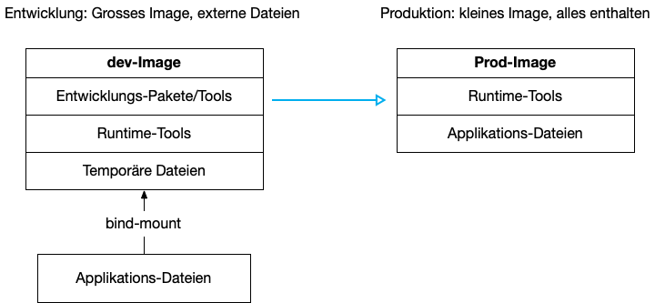

{% extends "../_base_template.html" %}
{% block title %}Lektion 10 - Production Container und Multistage Builds{% endblock %}

{% block sections %}
<section data-markdown>
<textarea data-template>
# <i class="fas fa-graduation-cap"></i> M347 - Produktions-Container erstellen

## Heutiges Ziel

- Sie wissen, wie Sie eine Applikation komplett in einen Container "verpacken"
- Sie können Dockerfiles erstellen, welche Ihre Applikation in mehreren Schritten bildet und startet
- Sie wissen, was "Multistage-Builds" sind und für was sie verwendet werden
- **Endziel**:
  - Sie haben einen Production-Build, welcher Ihre gesamte Frontend-Applikation (inkl. statischer Files) beinhaltet

</textarea>
</section>

<!-- ----------------------------------------------------------------------------- -->
<section>
<section data-markdown>
<textarea data-template>
# <i class="fas fa-graduation-cap"></i> Bis anhin: Entwicklungs-Container

Bis jetzt haben wir unsere(n) Container als Entwicklungs-Werkzeug verwendet. Wir haben unsere Applikation jeweils auch manuell gestartet:

entweder manuell IM Container:

```sh
shell > docker run ..... node:16 bash
docker> npm install       # Pakete installieren
docker> npm run build     # statische Webseite builden
docker> node server.js    # Server starten
```

oder als Kommando beim Erzeugen des Containers:

```sh
shell > docker run ..... frontend-image node server.js
```

Für die Entwicklung unserer Dienste ist dieses Vorgehen akzeptabel, ja sogar einfacher / besser, um allfällige Entwicklungs-
Zwischenschritte ausführen zu können.

**<i class="far fa-hand-point-right"></i> Für ein produktives Image wollen wir dies aber nicht:**

1. Ich möchte ein möglichst schlankes Image: Ich benötige darin kein Build-System für die Webseite mehr
2. Ich möchte ein Image, welches möglichst die **gesamte Applikation** bereits beinhaltet, OHNE dass ich die Ressourcen von extern anbinden muss
3. Ich möchte das "Bauen" des Produktions-Images möglichst automatisieren (Wiederholbarkeit)
4. Ich möchte in einem Produktionsbetrieb mein Container möglichst einfach, z.b. so, starten können:

```sh
shell > docker run -p 80:3000 frontend-image
```
</textarea>
</section>

<section data-markdown>
<textarea data-template>
# <i class="fas fa-graduation-cap"></i> Produktions-Images mit "Multistage Builds"



Wir möchten also unsere Applikation möglichst schlank und "selbst-genügsam" verpacken. Das Vorgehen dazu ist folgendes:

1. **Bilden der Applikation** (in unserem Fall: Bilden der statischen Webseite aus Templates):<br>
   Wir bauen ein Hilfs-Image, welches mit unseren Entwickler-Tools unsere Applikation fertig baut (statische Seiten generiert)
2. **Bilden eines minimalen Produktions-Images**:<br>
   Aus dem Ergebnis des ersten Schritts bauen wir das finale Produktions-Image

Hier hilft uns Docker mit so genannten **Multistage-Builds**: Ein finales Image wird aus mehreren Teilschritten, aus mehreren
Containern, "zusammengebaut". (Siehe <https://docs.docker.com/develop/develop-images/multistage-build/>)

<i class="far fa-hand-point-right"></i> **Ziel:** Wir wollen unseren Frontend-Service in ein selbständig laufendes, fertiges Image verpacken.

</textarea>
</section>

<section data-markdown>
<textarea data-template>
# <i class="fas fa-graduation-cap"></i> Produktions-Images mit "Multistage Builds"

Ein "Multistage-Build" wird in einem einzigen `Dockerfile` umgesetzt, und funktioniert grundsätzlich so:

```Dockerfile
# Wir benennen unsere erste "Phase", hier stage1
FROM node:16 AS stage1
COPY lokale/websiten/files/ /build/
RUN npm install             # wenn notwendig
# Hier bilden wir die statischen Files der Webseite:
RUN mein-build-kommando-1
RUN mein-build-kommando-2
RUN builde-meine-webseite
...

# Nun beginnt die 2. Phase, das nächste Image: Hier haben wir Zugriff auf
# das erste Image:
FROM node:16 AS finalStage

# Hier können wir auf die Files aus der stage1 zugreifen:
# Wir kopieren die fertigen statischen Files aus dem ersten Image:
COPY --from=stage1 /build/site/ /site/
COPY --from=stage1 /pfad/zum/package.json /site/package.json

# nun definieren wir die Startparameter für unser Image:
EXPOSE 3000                    # automatisch exponierter TCP-Port
WORKDIR /site                  # beim Container-Start wird in dieses Verzeichnis gewechselt
RUN npm install --production   # wir installieren nur noch die notwendigen Bibliotheken
CMD mein-run-commmand          # ... und dieses Kommando beim Container-Start ausgeführt
```

Auch das Bilden des Images läuft genau gleich ab:

```sh
shell> docker build -t prod-image pfad/zum/dockerfile/
```
</textarea>
</section>

<section data-markdown>
<textarea data-template>
# <i class="fas fa-flask"></i> Produktions-Image: Nun sind Sie dran!

**Aufgabe:** Erstellen Sie ein Produktions-Image mit einem Multistage-Dockerfile für Ihre Frontend-Seite:

Erzeugen Sie ein Dockerfile mit 2 Phasen:

1. in der ersten Phase erzeugen / bauen Sie Ihre statische Seite, wenn notwendig
2. in der zweiten Phase erstellen Sie ein MINIMALES, lauffähiges Image: Mit minimal ist gemeint:
  - das Image beinhaltet nur noch die notwendigen Files, Pakete, ....
  - das betrifft z.B. auch die NodeJS-Pakete, welche in "package.json" verzeichnet sind: Sie benötigen
    keine Build-Pakete mehr: Installieren Sie im 2. Schritt nur noch die notwendigen Bibliotheken (`npm install --production`)

**Ziele:**

- Das Bauen Ihres Images soll mit einem einzigen Kommando erfolgen (ein Dockerfile)
- Das fertige Image soll die gesamte Applikation beinhalten, also kein externes Volume mehr benötigen: Alle Files sind Teil des Images.
- Der letzte Build-Stage soll das Image so klein wie möglich behalten: Nur noch Notwendiges wird installiert.
- Das Starten soll ohne Zuweisung von Volumes und Ports auskommen, und auch kein Kommando definieren müssen:<br>
```sh
#  (-P mappt die im Dockerfile angegebenen Ports auf zufällige externe Ports):
shell> docker run -d --name prod-frontend -P prod-frontend-image
```
- Dieses Dockerfile können Sie auch in Ihr **Docker Compose-File** Einbauen und so eine
  Produktionsumgebung konfigurieren.

</textarea>
</section>
</section>

<section data-markdown>
<textarea data-template>
# <i class="fas fa-flask"></i> Produktions-Image: Zusammenfassung

## Multistage-Builds

* **Multistage-Builds** ermöglichen uns, ein finales Image in mehreren Schritten zu erstellen.
* Dabei beinhaltet das finale Image nur noch die notwendigen Files, ohne temporäre Build-Schritt-Artefakte
* Ziel ist dabei ein möglichst schlankes finales Image, welches alles beinhaltet, um die Applikation zu starten.

</textarea>
</section>

<section data-markdown>
<textarea data-template>
# <i class="fas fa-flask"></i> Nächste Lektionen - LB 1 und Projektarbeit

## Wissensprüfung LB 1

* Nächste Lektion: **Wissensprüfung** als Moodle-Prüfung. Themen:
  * Container-Konzepte (theoretisches Wissen)
  * Container-Kommandos (praktisches Anwenden)
  * Container-Dienst aufbauen (eigenen Dienst nach Vorgabe implementieren)

## Projektarbeit, 3x2 Lektionen

Siehe **mkdocs-Dokumentation** im Starter-Projekt: Ordner **Projektarbeit**

**Abgabe des Projektes erfolgt via Github-Classroom!**

**Abgabedatum**: Freitag, 23.06.2023, 23:55 (git-commit-Datum)


</textarea>
</section>

{% endblock %}
